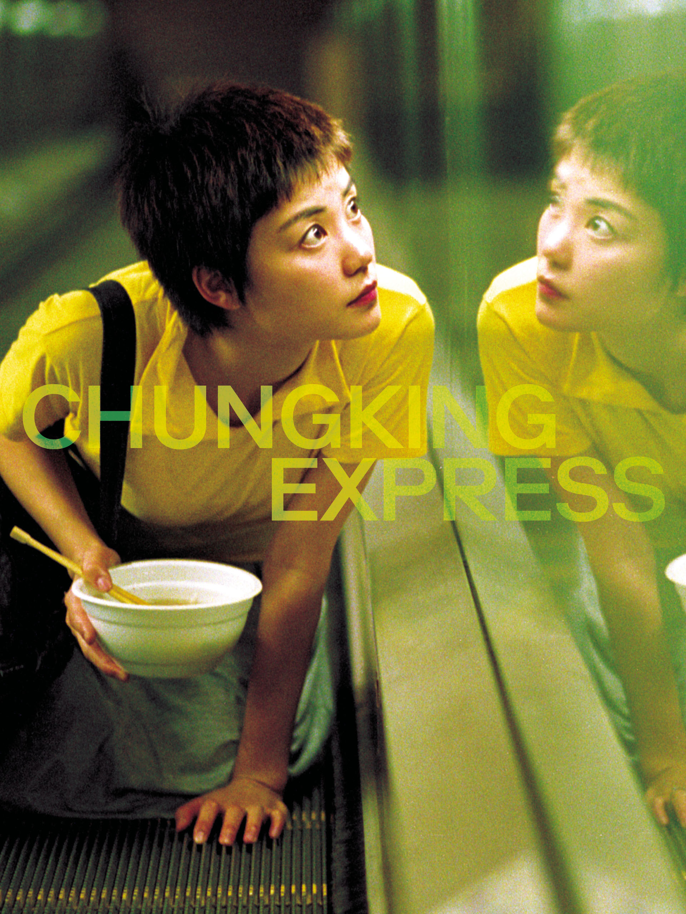
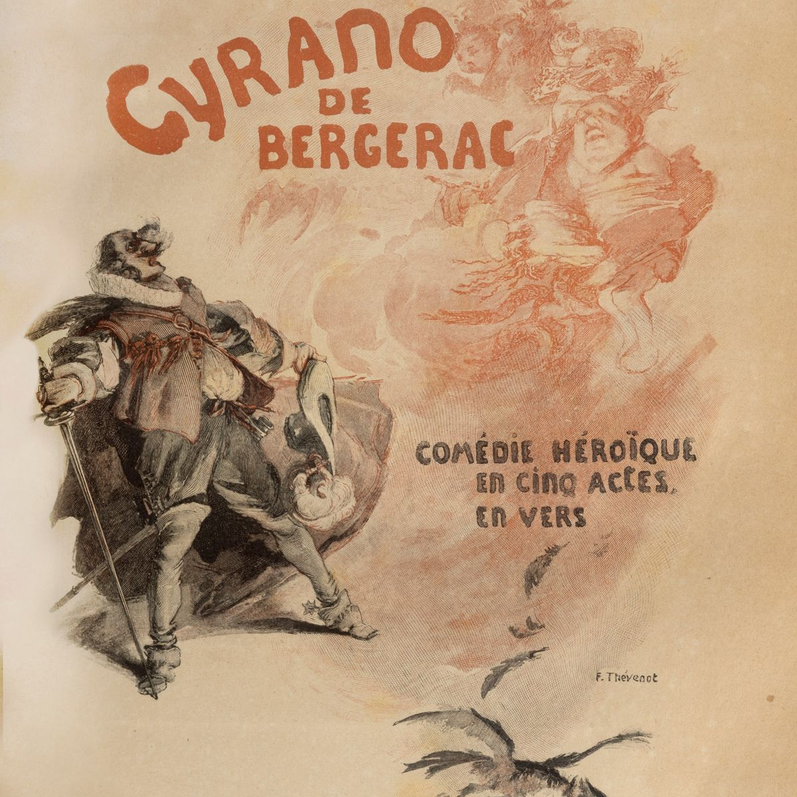
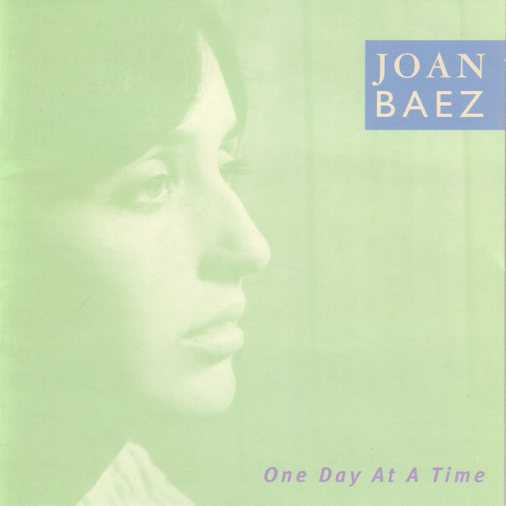

Laura.txt
Ciao Laura! Scusami tanto, so che sarai impegnatissima, ma avevo bisogno di parlare e Instagram non
permette messaggi così lunghi. Come va? Spero tu stia continuando a fare ciò che ami di più.
Oggi stavo ascoltando una canzone e mi è venuta voglia di condividere con te un pezzo della mia vita.
Non so bene perché, forse sono solo un po' arrabbiato. È il brano che ho ascoltato di più quando sono
arrivato a Viterbo: "In the Aeroplane Over the Sea" dei Neutral Milk Hotel, probabilmente la conosci. La
voce del cantante quando si chiede come sia possibile «essere qualsiasi cosa» mi emoziona
sempre.
Ricordo che appena arrivato, la prima cosa che ho fatto è stata andare alla fontana in Piazza del
Plebiscito. Non so nemmeno se abbia un nome preciso, ma spero di sì. Mi sono commosso: erano anni che
non vedevo qualcosa di così bello, anche se in fondo è una fontana come tante. Ho pensato che da lì
passassero molte più persone, molti più pensieri, e che ci fosse molto più inquinamento di quanto fossi
abituato; eppure proprio lì mi sono sentito vivo. Poi sono andato in libreria e ho comprato più libri di
quanti ne avessi programmati, felice semplicemente di averne una sotto casa. Ci vado ogni volta che
posso: amo il silenzio che c'è dentro e l'idea che tra quelle pagine si nasconda qualcosa che aspetta
solo di essere trovato.
Verso i sedici anni mi sono chiuso in camera, travolto da una depressione che mi ha portato ad
abbandonare la scuola e tutto ciò che sembrava normale per un ragazzo della mia età. Ci sono rimasto
fino ai diciannove. Non ho festeggiato il mio diciottesimo compleanno, non mi sono diplomato con gli
altri, non ho viaggiato né fatto esperienze. Nel frattempo tutti i miei amici prendevano la patente e io
arrancavo, sentendomi dire che ero troppo debole e troppo sensibile. Per un po' ho creduto fosse la mia
punizione per aver ferito qualcuno in passato. Ho reso la vita un inferno ai miei genitori, anche se non
me lo hanno mai detto. Sono stati molto bravi con me.
Nel mezzo, per non annoiarmi troppo, ho anche combinato qualcosa di buono: ho studiato come un ossesso,
ho imparato tutto quello che potevo, e a un certo punto mi sono ritrovato a lavorare con registi,
musicisti, compagnie teatrali. Roba strana, per uno che non usciva di casa. Se mai ci raccontiamo ancora
un po', quella storia te la devo proprio. Il problema è che, anche mentre succedevano queste cose, stavo
perdendo qualcosa di più sottile: la capacità di sognare, di immaginarmi da qualche altra parte, tra gli
alberi, in salute, a fare le cose più banali che fanno tutti. Ho iniziato a pensare che sarebbe finita
lì, nel letto di casa mia, senza aver mai visto la Scozia, senza aver mai sentito il freddo giusto sulla
faccia o camminato su un posto che non conoscevo.
Mi sentivo una scatola vuota, con una convinzione così forte da portarmi a tentare di farla finita due
volte. Per fortuna, entrambe senza riuscirci. Ohibò... meno male. Come avrebbe fatto il mondo senza una
star come me? Ricordo ancora il musetto della mia cagnolina che mi fissava senza capire, con quegli
occhi che non chiedono spiegazioni e non ne danno. Non so se sia stata lei a fermarmi, ma so che in quel
momento era l'unica cosa reale nella stanza. Mi ha salvato la vita e non lo saprà mai, e ogni tanto
penso che un amore così onesto me lo dovrei guadagnare un po' di più.
Dopo tanto tempo ho fatto le valigie e me ne sono andato, lasciando il paese che amo ma che mi stava
soffocando. Quel giorno ho pianto tutte le lacrime che avevo in corpo, con rabbia e gratitudine che si
mescolavano in modo strano, come quando guardi qualcuno che ti ha fatto soffrire ma che non hai mai
smesso di amare. Sono stato tanto legato alla semplicità di quel posto e oggi, dopo aver capito che il
mondo non si ferma oltre quel confine, provo una tenerezza infinita sapendo che esiste ancora un luogo
così.
Per citarti Pavese ne "La luna e i falò": «Un paese ci vuole, non fosse che per il gusto di andarsene
via. Un paese vuol dire non essere soli, sapere che nella gente, nelle piante, nella terra, c'è qualcosa
di tuo, che anche quando non ci sei resta ad aspettarti.»
Arrivando qui non sono guarito, ho solo smesso di avere così tanta paura di non esserlo. L'ansia e la
depressione ti costruiscono un mondo su misura, piccolo e controllabile, dove non entra niente che possa
farti del bene o del male. Ti sembra di stare al sicuro, ma in realtà stai solo aspettando che finisca
la giornata.
Ho giurato a me stesso di non rimettere piede in quegli angoli bui, tanto che a volte mi sembrano quasi
un'invenzione della mente. Non so descriverti la sensazione di lasciare tutto ciò che hai di certo per
ricominciare da zero: sarebbe come spiegarti cosa si prova a picchiare il vento o litigare con la
propria ombra. Ho ripreso a sognare e stavolta sto lottando davvero. Sono tornato a provare emozioni e
mi sono scoperto un ragazzo in gamba, probabilmente più di quanto abbia mai creduto e più di qualcuno
che una volta ho guardato con invidia pensando che sapesse stare al mondo meglio di me. Ora studio,
lavoro, faccio la spesa, vado in libreria, preparo il caffè e le ciambelle. Guardo tanti film quando
posso e mi dedico alle faccende: amo la mia Dyson, Dio quanto la amo.
All'inizio questa tranquillità mi turbava: ero abituato al caos e non sapevo cosa farmene della quiete.
Ci sto ancora prendendo confidenza. Resto malinconico, un po' strano e probabilmente insopportabile
nelle dosi sbagliate, ma è una versione di me che inizia a piacermi.
«E pur non la quercia essendo o il gran tiglio fronzuto, salir, anche non alto, ma salir senza
aiuto.»
Non voglio nasconderti che ho vissuto con amarezza questa nostra non-amicizia; forse il fatto che io ti
scriva così tanto ne è solamente un sintomo. A volte ho paura di ingigantire le situazioni, e
probabilmente è così, chissà. Ma quella sera in cui parlammo mi sono sentito, dopo tantissimo tempo,
felice e accolto. Mi piacerebbe sapere tutto di te. Ogni volta che ti mando un messaggio è come se
aspettassi che anche tu esplodessi per raccontarmi la tua vita.
È andata diversamente. A volte qualcuno passa nella nostra vita senza fermarsi, eppure resta più di chi
è rimasto davvero. Alla fine sono proprio le presenze incomplete a durare, quelle che non abbiamo
vissuto fino in fondo e che, proprio per questo, continuano a esistere. Trovo tutto questo molto più
umano di tante altre interazioni confuse che ho avuto. Grazie per non avermi illuso e per il tempo che
mi hai dedicato. Non cerco pena né voglio farti cambiare idea: so che non ci riuscirei. Vorrei solo che
restasse qualcosa, da entrambe le parti. Non un ricordo preciso, magari neanche un nome. Solo la
sensazione vaga di aver incrociato qualcuno che valeva la pena incontrare. Se continuassi a scriverti
finirei per mancarti di rispetto, accorciando i tempi tra un messaggio e l'altro finché non diventerei
solo rumore di fondo. Quindi in bocca al lupo per tutto.
Ti ho voluto bene, per un momento.
Un caro saluto Laura, sii bella ❤️.






Alla fine la patente l'ho presa!
Ciao :p
Stai ancora scorrendo?
Non ho più nulla da dire.
Davvero? Ancora?
Non mi lasci altra scelta.
Vuoi essere mia amica?